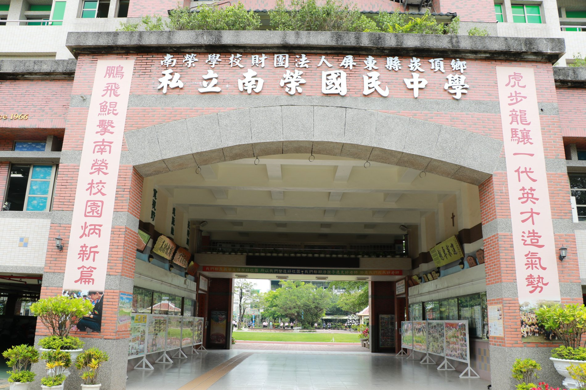

Since 1966

The Founder創立者
Chen Yao-huo studied in Japan — at Toyokuni Gakuen and Chuo University — before returning to teach in Taiwan.
In 1966, at the age of forty-three, he passed over the prosperous city of Pingtung and founded his school in the small farming township of Kanding instead — to "open up educational wilderness" where help was needed most. For forty years he poured himself into the school, even mortgaging and selling family property to keep it running, and was honoured with the nation's highest award for private education.
陳耀火先生は日本に学び——豊国学園、そして中央大学で学んだのち、台湾に戻り教鞭をとりました。
1966年、43歳のとき、繁栄する屏東市ではなく、小さな農村・崁頂郷に学校を創りました。最も助けを必要とする地で「教育の荒野を切り拓く」ためです。40年にわたり学校に身を捧げ、家屋敷を抵当に入れ、売り払ってまで学校を支え、私学教育における国家最高の栄誉を受けました。
"If you are going to build a school, build it where no one else is willing to."「学校をつくるなら、誰もやりたがらない場所でつくりなさい。」— Chen Yao-huo, to his teacher in Japan— 陳耀火、日本の恩師への言葉
Six Decades60年の歩み
Chen Yao-huo founds Nan Jung Junior High in Kanding, Pingtung.陳耀火先生が屏東・崁頂に南榮中学を創立。
Chosen by the government to provide compulsory education for the township — a role it still fulfils today.政府より地域の義務教育を担う「代用国中」に選定。その役割は今も続いています。
International exchanges begin — including with Toyokuni Gakuen in Japan, the founder's own alma mater.国際交流が始まる。創立者の母校・日本の豊国学園との交流もこの頃から。
The school's signature outdoor marching band is formed, growing into a national champion.学校の象徴である屋外マーチングバンドが結成され、全国の常勝校へ。
The community raises over NT$10 million to build it; American volunteers serve year-round.地域が1,000万台湾ドル超を募って建設。米国のボランティアが通年で常駐。
A friendship of decades is formalised with Sakura Kokusai High School.長年の友情が、さくら国際高等学校との姉妹校締結として結実。
Three generations on, Nan Jung celebrates six decades of character and the arts.三世代を経て、南榮は人づくりと芸術の60年を迎えます。

A Family's Stewardship家族の継承
The founder's spirit lives on in his family. His daughter Chen Chun-wan — who served as acting principal — is today the school's Chairperson, while her sister Chen Chun-shih, the school's second principal, now serves as Executive Director. What began as one man's calling has become a family's lifelong devotion.
創立者の精神は、その家族に受け継がれています。令嬢の陳純婉先生は——代理校長を務めたのち——現在は理事長として学校を率い、妹の陳純適先生は第二代校長を経て、現在は執行長を務めています。一人の使命として始まったものが、いまや一族の生涯をかけた献身となりました。
Honours栄誉
The first junior-high marching band ever invited to perform at Taiwan's National Day, on the plaza before the Presidential Office.台湾の国慶節式典に招かれた史上初の中学行進管楽団。総統府前広場の舞台に立ちました。
Awarded the Ministry of Education's national Gold Award for Teaching Excellence.教育部の全国「教学卓越 金質賞」を受賞しました。
Named one of the Ministry of Education's "Benchmark 100" schools for Pingtung County.教育部の「標竿100」学校として、屏東県を代表して選ばれました。
Selected by the Ministry of Education as a lead school for advancing international education.教育部より、国際教育を推進するリーダー校に選定されました。
Built with community funds, served by American volunteers — over 100,000 visits to date.地域の募金と米国人ボランティアに支えられ、のべ10万人以上が利用しています。
Seven national "Excellence" awards for the choir, with grand prizes across band, harmonica and dance.合唱団の全国特優7度に加え、管楽・ハーモニカ・舞踊でも全国特優を重ねています。
Motto & Crest校訓と校章
Sincerity · Simplicity · Courage · Benevolence誠実 ・ 質樸 ・ 勇気 ・ 仁愛
Two overlapping circles speak of unity and partnership — two dancers moving as one. At the centre, a vermilion carp leaps the dragon gate: the timeless symbol of striving upward and reaching one's fullest potential.
重なり合う二つの円は、団結と協力——ふたりが一体となって舞う姿を表します。中央では朱色の鯉が龍門を跳ね上がる。向上をめざし、己の可能性を最大限に発揮するという、時を超えた象徴です。